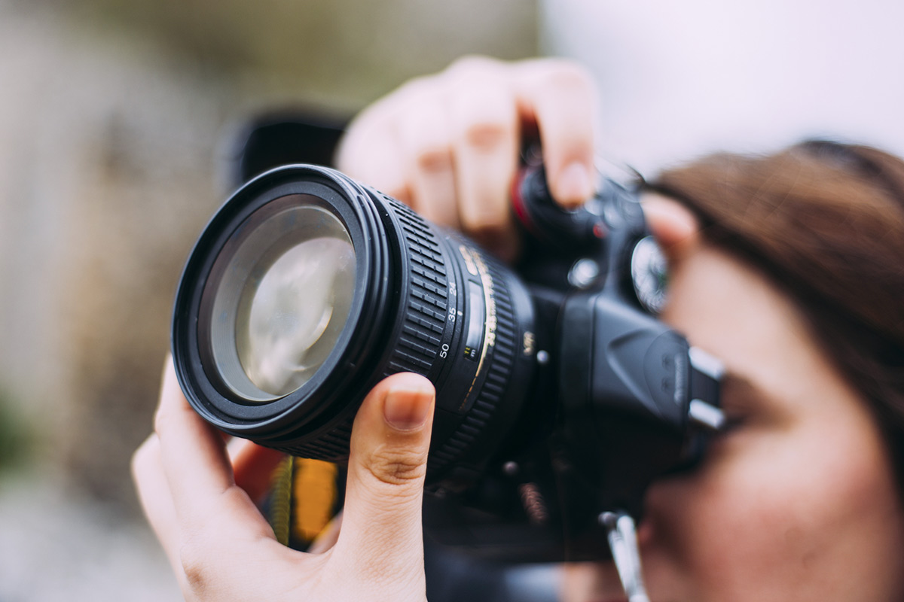

Hou het simpel
De beste foto's zijn vaak rustige foto's zonder storende elementen. Maak het jezelf niet te moeilijk.
Wil jij betere fotos maken?
De beste foto's zijn vaak rustige foto's zonder storende elementen. Maak het jezelf niet te moeilijk.
Zet de iso op het laagst mogelijk, en blijf de shutterspeed veranderen tot de foto er nou jouw mening helder uit ziet...
Welke instelling je ook gebruikt, je foto wordt een stuk interessanter door de juiste compositie. Let er dus goed op dat de foto prettig oogt...
Als je net begint met het maken van fotos probeer dan zo veel mogelijk naar buiten te gaan en te fotograferen. Door het maken van veel fotos zul je zien dat je steeds beter gaat fotograferen...
Een foto maken is tegenwoordig nog maar een onderdeel van het werk. Elke foto kan nog beter worden met behulp van de juiste nabewerking. Uiteraard is een goede foto nog steeds gewenst als uitgangspunt, maar met die basis kun je in korte tijd een goede foto nog beter maken. Dat kan met programma's als Photoshop of zelfs het gratis programma Gimp.
De meeste professionele camera's kunnen fotograferen in het zogenaamde RAW formaat. Dit is een ruw databestand met daarin de informatie rechtstreeks van de sensor. Als je fotografeert in Jpeg wordt deze ruwe data in de camera omgezet naar een Jpeg bestand. Jpeg kan helaas veel minder informatie bevaten dan je camerasensor kan vastleggen. Je verliest dus informatie.
Fotografeer jij nog op de automatische stand en vind je het maar lastig om de stap naar manual fotografie te maken? Wij raden je aan om het gewoon te doen! Door de stap te maken naar volledig handmatige fotografie, kun je jezelf leren om de instellingen beter te begrijpen. Je zult zien dat het naar verloop van tijd sneller gaat en dat je de belichtingsdriehoek steeds beter gaat begrijpen. Oefening baart kunst! Wil je weten hoe het werkt om handmatig je camera in te stellen?
2019 is een jaar om voor jezelf te kiezen en voor de dingen die jij het allerleukste vindt. Fotografie is daar waarschijnlijk één ding van. Maak dus de tijd - vaker - vrij om lekker op pad te gaan om te fotograferen. Fotograferen kan heerlijk ontspannend werken en dienen als een fijn rustmoment op de dag. Neem de tijd als je er met je camera op uit gaat en ga vooral niet te gehaast te werk. Je zal zien wanneer je de tijd neemt voor je fotografie, dat je uiteindelijk tot de mooiste resultaten komt.
Jezelf blijven uitdagen tijdens het fotograferen is erg belangrijk. Op die manier blijf je gemotiveerd en geïnspireerd om je camera er regelmatig bij te pakken. Natuurlijk kun je jezelf uitdagen door steeds nieuwe opdrachten te bedenken of verschillende genres uit te proberen.
Ik ben een groot liefhebber van foto’s maken met mobieltjes en van de mogelijkheden die het biedt voor wat betreft het plaatjes schieten en het bewerken, maar ook ten aanzien van de interactie met andere fotografen op Instagram. Dat gezegd hebbende, heb ik enkele maanden geleden een kwaliteitscamera gekocht die ik meestal bij me heb voor de minder spontane foto’s
